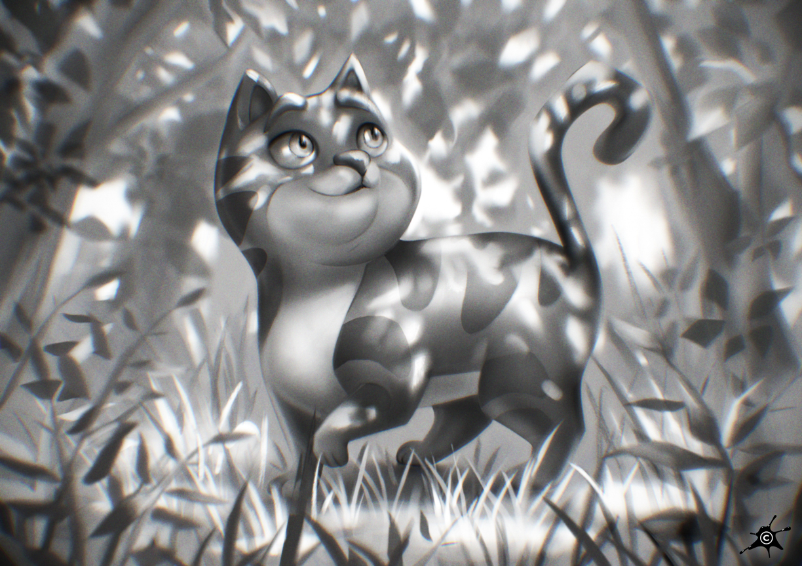
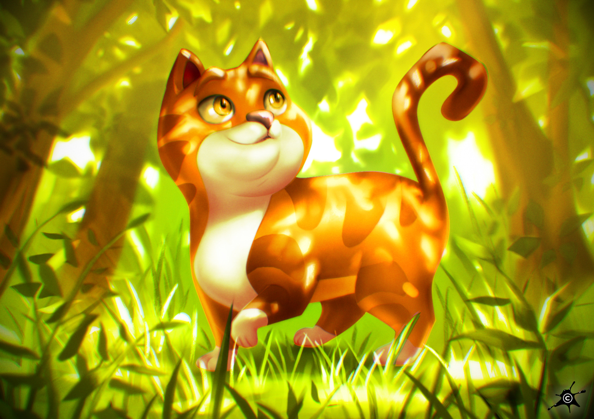

Digital Painting • Art Direction • Educational Process

Inspired by a pencil sketch by Mitch Leeuwe, this piece was reinterpreted into an original composition with lighting as the primary artistic driver. The environment was designed to precisely control contrast, light direction, and surface response, with a focus on dappled sunlight interacting with the cat’s fur. The painting process emphasized light-driven composition, material readability, and atmospheric depth.